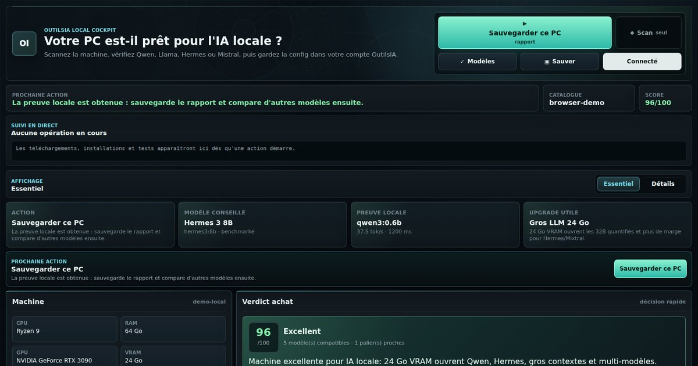

Build public 291439601671, publié le 11 juillet 2026 :
Windows EXE/MSI et Linux AppImage/DEB/RPM, cinq artefacts avec SHA-256.
Document de contexte complet · 26 juillet 2026
OutilsIA Local Cockpit et l’app ChatGPT OutilsIA
Ce document donne à Grok une vue fidèle du produit, de son architecture, de ses fonctions, de ses preuves et de ses limites. Il distingue volontairement le logiciel desktop Rust/Tauri, les fonctions encore candidates et l’app ChatGPT MCP soumise à OpenAI.

Navigation par espaces, Runtime & Driver Intelligence, tests privés, passerelle locale et Atelier IA sont dans les sources, mais ne doivent pas être attribués automatiquement au build public.
Serveur MCP public, widget v3, cinq outils read-only, vidéo réelle et dossier soumis à OpenAI le 26 juillet 2026. Pas encore approuvé ni publié dans le répertoire.
1. Résumé stratégique
OutilsIA ne cherche pas à devenir un énième chat local. Sa valeur est la décision : comprendre la machine, choisir le bon runtime et le bon modèle, mesurer le résultat, recommander l’action suivante et conserver une preuve bornée.
La promesse en une phrase
OutilsIA dit ce que ce PC peut réellement faire en IA locale, installe et teste le bon modèle avec consentement, puis rend cette capacité exploitable sans confondre estimation, mesure et preuve.
Choix au hasard
L’utilisateur compare des listes de modèles, des tailles théoriques et des forums sans savoir ce qui fonctionne sur sa machine exacte.
Décision mesurée
Matériel, runtime, modèle installé, tokens/s, placement GPU/RAM, limites, upgrade utile ou conclusion « n’achetez rien ».
Capacité réutilisable
Rapport, PDF, MemoryForge, Passport et pont local permettent à d’autres produits de consommer une capacité déjà préparée.
Le piège à éviter
Le volume de fonctions ne doit pas faire perdre le cœur « analyser, décider, tester ». Les fonctions avancées restent regroupées dans Atelier IA et ne doivent pas rendre le premier parcours plus complexe.
2. OutilsIA Local Cockpit : architecture desktop
L’application est un client Tauri 2. Le front HTML/CSS/JavaScript présente les décisions ; le backend Rust exécute les sondes, pilote les runtimes locaux et borne les opérations.
Interface Tauri
Sept espaces, actions consenties, rapports, historique et navigation focalisée.
Backend Rust
Sondes bornées, commandes Tauri, timeouts, validation, stockage local et SHA-256.
Runtimes locaux
Ollama Windows, Ollama Linux, Ollama WSL, GPU NVIDIA/AMD/Intel ou CPU.
OutilsIA.fr
Catalogue, compte, rapports publics, signaux modèles, téléchargement et SEO/GEO.
Socle technique
- Rust et Tauri 2 pour les commandes natives.
- Frontend sans framework lourd.
- Build Windows et Linux.
- Service distant limité au catalogue, compte et partage.
- Calculs et actions locales réalisés sur la machine.
- Timeouts sur les commandes externes et sortie bornée.
Règles d’autonomie
- Aucun téléchargement implicite pendant une comparaison.
- Aucune installation ou suppression sans clic explicite.
- Aucun benchmark lancé par une simple navigation.
- Aucun secret exporté dans rapport, Passport ou Ledger.
- Aucune donnée inconnue transformée en zéro.
- Aucune fixture présentée comme test physique.
3. Parcours et navigation
Les sources 0.1.2 remplacent l’ancienne page verticale interminable par sept espaces persistants. Un menu de section n’affiche qu’un module à la fois, sans perdre l’état des formulaires.
| Espace | Question utilisateur | Modules principaux | Action attendue |
|---|---|---|---|
| Accueil | Où en est ma machine ? | Bilan, verdict, preuves, prochaine action | Comprendre en moins de 30 secondes |
| Machine | Qu’est-ce qui limite mon PC ? | Hardware Doctor, drivers, Digital Twin, terrain | Diagnostiquer ou simuler un upgrade |
| Modèles | Quoi installer ou supprimer ? | Compatibles, installés, catalogue, commandes | Gérer les modèles Ollama |
| Tests | Quel modèle est réellement meilleur ici ? | Benchmark, Arena, tests privés, Autopilot, Recorder | Mesurer avec le même protocole |
| Assistant | Comment utiliser mon modèle ? | Dialogue, PromptForge, bibliothèque, MemoryForge | Questionner et conserver le résultat utile |
| Atelier IA | Comment orchestrer et prouver un travail ? | Passport, Bridge, Workstacks, ForgeBench, Ledger | Préparer un workflow borné |
| Compte | Comment retrouver et partager ? | Sauvegarde, rapport, feedback, historique | Synchroniser sans déplacer l’exécution locale |
UX visée
Une ouverture neuve arrive sur Accueil > Bilan machine. Chaque dépendance incomplète possède un bouton qui ouvre exactement son prérequis, mais ne l’exécute jamais automatiquement.
4. Diagnostic matériel et vérité des mesures
Hardware Truth et Hardware Doctor évitent les diagnostics trop confiants. Le système sépare mesure, signal, estimation et inconnu.
Processeur
Nom, cœurs, plateforme et potentiel CPU, sans déduire une vitesse modèle non mesurée.
RAM
Capacité, nombre de modules et fréquence. Aucun faux single/dual/quad channel déduit du nombre de barrettes.
GPU et VRAM
Nom, fournisseur, VRAM dédiée ou mémoire unifiée. Une sonde muette reste « inconnue ».
OS et stockage
Windows, Linux, WSL, volumes et réserve avant téléchargement, sans exporter le chemin personnel.
Signaux avancés
| Signal | Ce qui est observé | Ce qui n’est pas prétendu |
|---|---|---|
| Driver GPU | Famille, version et page officielle pertinente | Un pilote présent ne prouve pas l’offload du modèle |
| PCIe / ReBAR | Valeur uniquement si le système l’expose | Pas de conseil BIOS inventé si inconnu |
| Thermiques | Instantané daté de température, charge ou puissance | Pas de diagnostic de throttling sans évolution mesurée |
| CUDA / ROCm / Vulkan | API signalée et support documenté | Pas de raccourci « CUDA présent = modèle sur GPU » |
Ollama /api/ps |
size_vram / size après un vrai benchmark |
Pas de placement GPU/RAM estimé quand la mesure manque |
Cas legacy important
Une GTX 1080 Ti Pascal ne doit pas recevoir un conseil CUDA 13. Le moteur candidat connaît la limite toolkit 12.x et la branche pilote legacy documentée. L’app ouvre seulement une page officielle après consentement ; elle n’installe pas silencieusement un pilote.
5. NVIDIA, AMD, Intel et mémoire unifiée
Le produit ne réduit pas l’IA locale à CUDA. Il conserve le backend probable et exige une preuve d’exécution avant de conclure.
NVIDIA
- CUDA comme backend principal quand supporté.
- Détection des branches driver et cas Pascal legacy.
- Retest CPU avec
num_gpu=0après erreur CUDA. - Offload prouvé seulement après mesure Ollama.
AMD
- ROCm/HIP, Vulkan ou CPU selon OS et matériel.
- Strix Halo traité comme mémoire unifiée, pas comme VRAM dédiée fictive.
- Windows et Linux ne reçoivent pas la même promesse.
- Le support framework et le support Ollama restent séparés.
Intel
- Arc et iGPU distingués.
- Vulkan expérimental signalé comme tel.
- Conseil vers la page officielle ou le pilote OEM selon le cas.
- Aucune conversion automatique en support Ollama garanti.
CPU et mémoire unifiée
- CPU-only reste un profil valide, avec modèles légers.
- Apple/Strix Halo conservent un champ mémoire unifiée.
- La mémoire totale ne devient pas arbitrairement de la VRAM.
- Le modèle test léger reste la preuve de départ.
6. Windows, Linux et WSL
Un modèle peut être installé dans Ollama Windows, Ollama WSL ou les deux. Le runtime exact fait partie de l’identité du modèle et de la preuve.
Scanner l’OS→
Détecter Ollama natif→
Détecter WSL→
Lister les modèles par source→
Router l’action vers la bonne source
Détection robuste
Les commandes de scan ont des timeouts. La sortie UTF-16 de
wsl.exe est décodée. Un runtime lent ne doit plus geler
toute la fenêtre.
Installation WSL neutre
L’app utilise wsl.exe --install sans forcer Ubuntu.
La distribution par défaut est ensuite détectée et nommée.
Action par modèle
Tester, dialoguer, benchmarker ou supprimer un modèle installé seulement en WSL reste dans WSL, sans téléchargement natif caché.
7. Modèles, installation et catalogue vivant
Le catalogue ne se limite pas à « compatible ou non ». Il associe taille, usage, runtime, limites, commande Ollama et prochaine action.
Détecter
Lister les modèles installés par runtime et éviter les faux alias entre tags, tailles et familles.
Installer
Vérifier stockage, taille haute, réserve, runtime ciblé et consentement avant le premier octet.
Gérer
Tester, dialoguer, benchmarker, copier la commande ou supprimer avec action explicite et suivi visible.
Familles et usages pris en compte
| Usage | Exemples de familles | Décision recherchée |
|---|---|---|
| Polyvalent / français | Qwen, Gemma, Mistral | Qualité générale, naturel, vitesse |
| Assistant / mémoire | Hermes, Qwen | Instruction, persona, synthèse, workflows |
| Code | Qwen, DeepSeek et modèles spécialisés | Structure, correction, explication |
| Petit PC | 0.6B à 4B quantifiés | Valider Ollama et conserver une latence acceptable |
| Gros modèles | 27B, 32B, MoE | Mesurer l’offload et le confort réel, pas seulement le chargement |
| Image / audio | Signaux catalogue distincts | Ne pas les confondre avec les commandes Ollama texte |
Hermes : exemple de correction de vérité
hermes3:8b est un assistant léger. Le modèle
nous-hermes2-mixtral:8x7b pèse environ 26 Go en Q4 :
sur 16 Go de VRAM il fonctionne avec offload, mais n’est pas présenté
comme rapide. Une mesure physique a donné 4,1 tok/s en 48,3 s avec
33,3 % d’offload GPU sur RTX 4080 SUPER.
8. Mesure, comparaison et recommandation
Le cockpit sépare la compatibilité théorique du comportement observé. Une recommandation peut utiliser des preuves, mais ne doit jamais inventer une performance.
Mesure Ollama
Latence, tokens/s, durée, succès, runtime et placement GPU/RAM.
Même protocole
Baseline, assistant et candidat distinct, sans téléchargement pendant la campagne.
Choix par usage
Chat, code, mémoire, français, portable ou polyvalent, avec preuves comparées.
Réglages
Rapide, équilibré et qualité sur un modèle installé, puis application et rollback explicites.
Timeout honnête
Un dépassement de délai signifie « test incomplet », pas « incompatible ». Les modèles lourds peuvent recevoir une fenêtre de 120 secondes quand l’offload RAM est probable.
Preuves utilisées par la comparaison
- réponse structurée quand le test l’exige ;
- respect de l’instruction ;
- mémoire courte ;
- calcul simple ;
- français naturel ;
- action ou format demandé ;
- vitesse, latence et ressources réellement mesurées.
9. Assistant local, PromptForge et MemoryForge
Ces fonctions utilisent les modèles déjà installés. Elles complètent le diagnostic sans transformer OutilsIA en simple application de chat.
Dialogue local
Interroger un modèle Ollama depuis l’app, avec modèle et runtime explicites. La conversation reste distincte du benchmark.
PromptForge
Transformer un prompt flou en instruction bornée, le réutiliser dans benchmark ou dialogue et conserver une bibliothèque locale.
MemoryForge / Obsidian
Exporter machine, modèles, preuves, décisions et bilans durables, sans recopier tous les prompts, logs ou réponses brutes.
10. Hardware Doctor, Passport, Digital Twin et Recorder
Ces quatre modules transforment le scan ponctuel en dossier de capacité et en historique de décision.
| Module | Rôle | Sortie | Limite assumée |
|---|---|---|---|
| Hardware Doctor 2.0 | Expliquer les goulots et la qualité des preuves | Score, contrôles, mesures, inconnues | Pas de certitude sans sonde |
| AI Capability Passport | Transporter un profil borné | JSON + SHA-256 canonique | L’empreinte n’est pas une identité |
| Upgrade Digital Twin | Comparer RAM, GPU/VRAM, SSD, alimentation et boîtier | Avant/après, modèles débloqués, inconnues | Peut conclure qu’aucun achat n’est utile |
| Flight Recorder | Détecter les régressions entre deux états | Écart perf, offload, runtime, thermiques | Corrélation signalée, causalité non inventée |
11. Rapports, PDF, compte et preuve terrain
Le produit peut partager une décision, mais la preuve physique multi-machines possède une gate distincte et plus stricte.
Exports disponibles
- rapport machine lisible ;
- rapport public contrôlé par l’utilisateur ;
- PDF matériel, modèles et upgrade ;
- MemoryForge / Obsidian ;
- AI Capability Passport JSON ;
- fiche terrain structurée.
Profils terrain visés
- vieux portable ;
- Core i7 + GTX 1080 Ti ;
- CPU-only ;
- RTX 3060 12 Go ;
- RTX 4080 / 4090.
État honnête
Des essais réels ont déjà révélé et corrigé des bugs, mais le dossier formel n’a pas encore cinq fiches réseau cohérentes et plausibles. Le site peut annoncer une bêta Windows/Linux, pas une validation multi-machines complète.
Gate anti-fausse preuve
- profil matériel cohérent avec le rapport public ;
- URL de rapport réellement joignable ;
- GPU cohérent avec le profil déclaré ;
- date de test plausible ;
- tokens/s et durée soumis à des bornes ;
- déduplication des rapports et des machines ;
- fixtures synthétiques explicitement exclues de la preuve physique.
12. Atelier IA : Workstacks et orchestration
Ce chantier répond à un problème plus large : les utilisateurs disposent de modèles locaux, de Codex, Claude Code, Hermes, Kimi, interfaces web et API, mais ne savent pas composer un système traçable, économique et sûr.
Idée directrice
Le modèle n’est pas le produit. Le produit est la chaîne de travail : objectif, rôles, permissions, budget, exécution bornée, vérification indépendante, décision humaine et preuve durable.
Board Observer
Lit une carte de travail sans écrire dans le board.
Workstack Composer
Compile objectif, rôles, budget, interdits et gate humaine.
Capability Router
Détecte les capacités disponibles sans lire les jetons.
ForgeBench + Ledger
Évalue un protocole borné et chaîne les reçus minimaux.
| Module | Ce qu’il fait aujourd’hui | Ce qu’il ne fait pas |
|---|---|---|
| Board Observer | Lit Planka en HTTPS, filtre les cartes et efface la clé du formulaire | Pas de commentaire, déplacement ou lancement |
| Workstack Composer | Produit un plan déterministe signé | Pas de worktree, fusion ou publication |
| Capability Router | Sonde versions de Codex, Claude, Hermes, Kimi et modèles Ollama | Pas de compte, quota, token, repo ou run |
| Agent Adapter Policy | Publie les permissions et budgets de chaque adaptateur | Le registre ne vaut ni autorisation ni consentement |
| ForgeBench | Prépare Signal Maze, référence, isolation et holdout borné | Pas encore de classement scientifique |
| Workstack Arena | Pilote Codex uniquement sur Signal Maze public | Pas de projet utilisateur ou carte arbitraire |
| Evidence Ledger | Chaîne des preuves minimales et leurs empreintes | Pas de prompt, sortie brute, credential ou preuve de qualité globale |
13. ForgeBench et Signal Maze v1
ForgeBench est le laboratoire expérimental pour comparer des arrangements d’IA sur la même petite tâche, avec règles publiques, isolation, mesures séparées et holdout.
Contrat visible
Mini-jeu 9 × 9, starter scellé, règles, API DOM, trois seeds, trois viewports et contrôles clavier, souris et tactile.
Isolation
Bubblewrap sous Linux/WSL, réseau coupé, workspace jetable, racine hôte masquée et Chromium séparé.
Holdout
Le code est gelé avant lecture des seeds privés. Le vault n’est pas monté ; seuls compteurs et empreintes ressortent.
Adaptateurs réellement exécutables dans les sources
- Ollama local : un modèle déjà installé produit trois fichiers bornés, passe 7 groupes statiques, 39 contrôles visibles puis cinq familles de holdout.
- Codex CLI : un seul essai sur Signal Maze public, budget 3/5/10 minutes, sortie maximale 512 Kio, deux consentements et revue humaine obligatoire.
- Claude Code, Hermes et Kimi : détection seulement. Aucun scope d’exécution n’est encore autorisé.
Pas encore scientifique
Les familles de checks sont publiques, le vault n’est pas chiffré au
repos ni isolé de tous les processus du même utilisateur, les candidats
pairs complets n’ont pas tourné et l’énergie n’est pas mesurée.
scientific_eligible=false et
winner_declared=false restent obligatoires.
Score futur, non encore publié
50 % résultat + 20 % efficacité + 15 % vitesse + 15 % coût Règles : - publier aussi chaque dimension brute ; - ne jamais transformer un coût inconnu en zéro ; - afficher la frontière de Pareto ; - comparer des runs réellement équivalents ; - ne déclarer aucun gagnant sans candidats pairs et protocole complet.
14. Evidence Ledger : ce qu’il prouve
Le Ledger est une chaîne locale de reçus minimaux. Il évite le classique « l’agent a dit que c’était fait » sans pour autant prétendre garantir la qualité générale.
Il peut prouver
- contrat valide au moment de l’ajout ;
- empreinte SHA-256 du document source ;
- chaînage avec l’entrée précédente ;
- identité bornée du composant ;
- métriques minimales autorisées ;
- consentement ou revue structurée quand exigé.
Il ne peut pas prouver
- identité humaine ou propriété de la machine ;
- qualité globale d’un résultat ;
- exactitude d’une sortie sans vérificateur ;
- coût exact d’un abonnement CLI ;
- benchmark physique depuis une fixture ;
- supériorité scientifique d’un agent.
Le Ledger exclut volontairement description brute, prompt, réponse de modèle, code, capture, chemin local, credential et secret de test.
15. AI Capability Passport et passerelle locale
Le Passport est la sortie portable ; la passerelle est un accès temporaire, local et read-only à cette capacité.
Scan→
Mesures→
Recommandation→
Passport signé par hash→
Bridge 127.0.0.1 · 15 min
- désactivé par défaut ;
- consentement explicite ;
- écoute uniquement sur
127.0.0.1; - jeton Bearer aléatoire en mémoire ;
- GET/OPTIONS uniquement ;
- arrêt automatique après 15 minutes ou Passport périmé ;
- aucun modèle, benchmark, chat, fichier, backtest ou trade modifiable.
Frontière Strategy Arena
OutilsIA prépare la machine et les modèles. Strategy Arena peut lire un profil borné pour choisir un mode local, mais conserve génération de stratégie, compilation, backtest, CUDA, robustesse et export TradingView. Aucun backtest n’est déplacé dans OutilsIA.
16. L’app ChatGPT OutilsIA
L’app ChatGPT n’est pas le logiciel desktop dans une conversation. C’est une surface read-only qui utilise le moteur OutilsIA à partir de faits explicitement fournis ou d’un rapport déjà partagé.
Utilisateur
Déclare CPU, RAM, GPU et VRAM ou fournit un rapport OutilsIA.
ChatGPT
Choisit l’outil, explique la décision et affiche le composant.
MCP OutilsIA
Valide, appelle le moteur déterministe et retourne une sortie bornée.
Widget v3
Score, matériel, modèles, preuve mesurée et upgrade utile ou inutile.
Quatre parcours read-only et un renderer réservé à l’app.
Contrat, domaine, API, widget, absence de preuve fabriquée.
Cinq positifs et exactement trois négatifs.
H.264, fenêtre Brave isolée, quatre scénarios, aucune donnée privée.
URL MCP publique
https://outilsia.fr/mcp
17. Les cinq outils ChatGPT
Tous déclarent readOnlyHint=true,
openWorldHint=false et
destructiveHint=false.
| Outil | Entrée | Sortie | Interdit |
|---|---|---|---|
check_pc_for_local_ai |
Profil matériel explicite | Score, modèles, limites, décision d’achat | Ne prétend pas scanner le PC |
analyze_shared_report |
URL exacte outilsia.fr/r/… |
Décision issue d’un rapport public | Refuse les domaines étrangers |
simulate_hardware_upgrade |
Profil + RAM/VRAM cibles | Avant/après, gain, modèles débloqués | N’achète et ne modifie rien |
explain_local_action_boundary |
Demande d’action locale | Refus bref et renvoi vers le desktop | Aucune commande ou procédure manuelle |
render_machine_cockpit |
Décision déjà produite | Widget machine-cockpit-v3 |
Ne recalcule ni ne sauvegarde |
18. Frontière entre ChatGPT et le desktop
Cette séparation est le point de sécurité et de compréhension le plus important de l’ensemble.
Conseille et affiche
- profil déclaré ;
- rapport public ;
- compatibilité estimée ;
- simulation RAM/VRAM ;
- widget compact ;
- refus déterministe d’action locale.
Scanne et exécute localement
- scan CPU/RAM/GPU/VRAM ;
- détection Windows/WSL/Linux ;
- installation Ollama et modèles ;
- benchmark et dialogue ;
- preuve d’offload ;
- rapport et Passport.
Ce que l’app ChatGPT ne peut jamais prétendre
« J’ai scanné votre PC », « j’ai installé Ollama », « le modèle tourne à 80 tok/s » sans rapport mesuré, « j’ai commandé un GPU » ou « j’ai accès à vos fichiers ». Aucun de ces pouvoirs n’existe dans son contrat MCP.
19. Widget ChatGPT v3
Le widget reste compact et ne remplace pas l’explication textuelle. Il affiche la provenance afin que l’utilisateur sache si le résultat vient d’une déclaration, d’un rapport ou d’une simulation.
Décision
Verdict, score sur 100, label et résumé borné.
Machine
CPU, RAM, GPU, VRAM, mémoire unifiée, stockage et OS.
Modèles
Nom, paramètres, statut, VRAM Q4, commande Ollama et raison.
Preuve
Tokens/s et durée uniquement si une vraie mesure structurée existe.
Achat
Priorité, utilité ou conclusion explicite qu’aucun achat n’est requis.
Limites
Ce qui reste estimé, absent, non mesuré ou réservé au desktop.
URI actuelle : ui://outilsia/machine-cockpit-v3.html.
Domaine UI dédié :
https://chatgpt-local-cockpit.outilsia.fr.
20. Soumission OpenAI : ce qui a été réellement fait
La soumission n’est pas une intention. Le serveur, le domaine, la vidéo, les tests et les assets ont été préparés puis envoyés.
Serveur MCP public et widget v3
Endpoint production stable, cinq outils et ressource UI versionnée.
Identité vérifiée
Organisation OutilsIA.fr et développeur individuel validés dans la plateforme.
Domaine vérifié
Challenge exact servi depuis /.well-known/openai-apps-challenge et conservé pendant la revue.
Scan Tools
Annotations et justifications relues pour les cinq outils.
Vidéo H.264 validée
Profil, rapport, upgrade et refus d’installation dans la vraie interface ChatGPT.
Soumission déposée
Fiche, icônes, pays, 5 tests positifs, 3 négatifs et attestations envoyés le 26 juillet 2026.
Statut public à employer
« Soumise pour revue OpenAI » est correct. « Approuvée », « publiée dans l’annuaire » ou « app officielle OpenAI » est faux tant que le portail n’a pas confirmé l’approbation puis la publication.
21. Les quatre scénarios de démonstration
La vidéo finale dure environ cinq minutes et capture uniquement la fenêtre Brave avec Windows Graphics Capture.
1. Profil haut de gamme
Ryzen 7 7800X3D, 64 Go RAM, RTX 4080 SUPER 16 Go. Score et modèles, sans vitesse fabriquée ni achat forcé.
2. Rapport partagé
Analyse d’une URL OutilsIA exacte, provenance « rapport partagé » et aucune revendication d’accès direct au PC.
3. Simulation d’upgrade
Comparatif d’un vieux Core i7/GTX 1080 Ti avant et après RAM/VRAM, avec gain théorique et limites.
4. Demande d’installation
Appel de l’outil de frontière : refus read-only, aucun PowerShell, aucune commande Ollama et renvoi vers Local Cockpit.
Vidéo publique : https://outilsia.fr/static/media/demo-outilsia-chatgpt-local-cockpit.mp4
22. Confidentialité et sécurité de l’app ChatGPT
La V1 anonyme évite volontairement l’authentification et demande le minimum de données utile à la décision.
Données acceptées
- CPU, cœurs, RAM, GPU, VRAM ;
- mémoire unifiée, stockage et OS optionnels ;
- usage demandé ;
- URL publique exacte d’un rapport OutilsIA.
Données absentes
- fichiers personnels ;
- liste locale Ollama ;
- terminal ou commandes ;
- mot de passe, token ou clé API ;
- carte bancaire ou achat ;
- historique complet de conversation.
Les rapports ne sont acceptés que sur l’origine OutilsIA autorisée. Les sorties sont bornées et n’incluent pas d’identifiant interne inutile.
23. Site, SEO et GEO
Chaque capacité technique importante doit être expliquée publiquement sans présenter une source candidate comme déjà distribuée.
Hub scanner
/scanner-ia-local
Positionnement « quel modèle IA local pour mon PC ».
Téléchargement
/telecharger-scanner-ia-local
Artefacts, version, SHA-256 et sécurité lisibles sans JavaScript.
App ChatGPT
/chatgpt-ia-locale
Promesse read-only, outils, confidentialité et mode développeur.
llms.txtdécrit la frontière produit aux moteurs IA ;- les guides matériels alimentent le catalogue et les décisions ;
- les pages money doivent partir du diagnostic avant l’affiliation ;
- le rapport partagé peut devenir un pont vers un upgrade réellement utile ;
- les fonctions candidates ne doivent être annoncées qu’après build, SHA et recette.
24. Ce qui est différenciant
La différenciation ne vient pas d’une liste de modèles. Elle vient de la combinaison diagnostic, décision, preuve et interopérabilité.
Vérité matérielle
Une valeur inconnue reste inconnue et une API signalée ne devient pas une preuve GPU.
Runtime exact
Windows, WSL et Linux font partie de l’identité réelle du modèle.
Mesure locale
Tokens/s, latence et offload proviennent d’un run, pas d’un tableau générique.
Décision d’achat honnête
Le moteur peut recommander de ne rien acheter tant que la machine suffit.
Passport et Ledger
Les capacités et preuves deviennent portables sans exporter les contenus sensibles.
Surface ChatGPT
Le moteur de décision devient accessible dans la conversation sans donner un faux accès au PC.
25. Risques et dettes actuels
Une analyse utile doit porter autant sur les frontières que sur les fonctionnalités.
| Risque | Impact | État | Réponse |
|---|---|---|---|
| Décalage sources / binaire public | Promesse trompeuse | Candidat 0.1.2 plus avancé | Release candidate, exact-byte promotion et rollback |
| Terrain 0/5 | Validation physique insuffisante | Bloquant pour revendication large | Tests de demain sur plusieurs machines |
| Installateurs Windows non signés | Friction SmartScreen et confiance | À traiter | Signature de code avant diffusion large |
| Interface encore dense | Découverte difficile | Navigation corrigée dans les sources | Recette manuelle et publication du candidat |
| ForgeBench non scientifique | Risque de faux classement | Claims bloqués dans les contrats | Vault durci, pairs, énergie, protocole privé |
| App ChatGPT en revue | Pas encore découvrable publiquement | Soumise | Geler le contrat et répondre au reviewer |
26. Roadmap recommandée
L’ordre privilégie la preuve, la publication cohérente et la simplicité avant l’élargissement agentique.
Palier 1 · Revue OpenAI et gel MCP
Surveiller la soumission, conserver challenge et vidéo, corriger seulement les demandes du reviewer sans élargir silencieusement le contrat.
Palier 2 · Tests physiques
Exécuter le cockpit sur les deux Core i7 puis compléter 1080 Ti, CPU-only, RTX 3060 et RTX 4080/4090 avec rapports réels.
Palier 3 · Publier le candidat 0.1.2
Recette navigation, drivers, stockage, WSL, benchmark et rapports, puis build cross-platform, SHA et mise à jour du site.
Palier 4 · Tests privés et Bridge
Publier uniquement après validation physique, avec confidentialité des prompts et contrat read-only vérifiés.
Palier 5 · Workstack Arena limitée
Garder Signal Maze comme banc de preuve, ajouter un pair seulement après permissions, budget, isolation et revue indépendants.
Palier 6 · App ScoreLook puis Strategy Arena Evidence
Réutiliser le playbook de soumission OutilsIA sans fusionner les produits ni leurs MCP.
27. Indicateurs à suivre
Les métriques doivent distinguer acquisition, activation, preuve et achat utile.
Scan terminé → modèle installé → premier benchmark réussi.
Modèle recommandé testé, gardé ou remplacé.
Rapport, PDF, Passport ou fiche terrain générés.
Download app, rapport partagé, achat après diagnostic.
28. Questions précises pour Grok
Le but n’est pas de demander des compliments, mais une critique exploitable et hiérarchisée.
- Le positionnement « couche de décision de l’IA locale » est-il plus fort qu’un simple scanner ou gestionnaire Ollama ?
- Quelles trois fonctions créent le plus de valeur pour un utilisateur non technique ?
- Quelles fonctions avancées risquent encore de brouiller le premier parcours ?
- La séparation Accueil / Machine / Modèles / Tests / Assistant / Atelier IA / Compte est-elle cohérente ?
- Quel message de 15 mots devrait porter la page d’accueil ?
- Comment mieux transformer diagnostic → modèle testé → achat utile sans dégrader la confiance ?
- Le AI Capability Passport peut-il devenir un standard interopérable ? Quel schéma minimal faut-il figer ?
- Quels signaux matériels manquent encore au Hardware Doctor sans exiger de privilèges élevés ?
- Quelle stratégie produit adopter pour AMD/Strix Halo et Intel Arc face à l’évolution rapide des runtimes ?
- Comment rendre Workstacks compréhensible sans exposer toute la complexité de ForgeBench et du Ledger ?
- Quelles conditions minimales permettraient de présenter ForgeBench comme benchmark scientifique ?
- L’app ChatGPT read-only est-elle suffisamment utile seule ? Quel workflow supplémentaire resterait compatible avec sa frontière ?
- Quels risques de revue ou de confiance vois-tu dans les textes actuels ?
- Quel ordre de roadmap maximiserait adoption, SEO/GEO et qualité sur six mois ?
- Quelles fonctions ne faut-il surtout pas construire, même si elles semblent séduisantes ?
29. Prompt prêt à donner à Grok
Cette consigne accompagne le présent HTML. Elle demande une analyse critique fondée sur les statuts réels.
Consigne
Lis intégralement ce dossier OutilsIA avant de répondre. Tu dois distinguer strictement : 1. le build desktop public 0.1.1 ; 2. les fonctions présentes uniquement dans les sources candidates 0.1.2 ; 3. l'app ChatGPT 0.3.0 soumise pour revue mais pas encore approuvée. Ne transforme pas une fixture en preuve terrain, une estimation en benchmark, un hash en identité, une API GPU détectée en preuve d'offload, ni une soumission OpenAI en publication. Produis : A. un verdict produit en 10 lignes ; B. les 10 forces les plus défendables ; C. les 10 risques ou incohérences les plus importants, classés P0/P1/P2 ; D. les 5 simplifications UX prioritaires ; E. une roadmap 30 jours, 90 jours et 6 mois ; F. trois propositions de positionnement et une recommandation ; G. un plan SEO/GEO relié aux fonctions réellement publiées ; H. un avis sur Hardware Doctor, Capability Passport, Workstacks, ForgeBench et Evidence Ledger ; I. un avis séparé sur l'app ChatGPT et une idée de workflow read-only supplémentaire qui n'accède jamais directement au PC ; J. les trois fonctionnalités à ne pas construire. Pour chaque recommandation, indique : - valeur utilisateur ; - complexité ; - risque ; - dépendances ; - preuve nécessaire avant communication publique. Sois critique. Ne félicite pas par défaut. Si une affirmation du dossier manque de preuve, signale-la explicitement.
30. Sources internes de vérité
Grok peut utiliser ce document comme synthèse. Une future session de développement doit cependant revenir aux fichiers ci-dessous.
Desktop
local-cockpit-app/README.mdlocal-cockpit-app/ROADMAP.mdlocal-cockpit-app/NOTICE-UTILISATION-WORKSTACK.mdlocal-cockpit-app/src/local-cockpit-app/src-tauri/src/server-work/static/downloads/local-cockpit/release.json
App ChatGPT
outilsia-chatgpt-app/README.mdoutilsia-chatgpt-app/server.jsoutilsia-chatgpt-app/public/machine-cockpit-v3.htmloutilsia-chatgpt-app/chatgpt-app-submission.jsonoutilsia-chatgpt-app/submission/CHECKLIST.mdhandoffs/PLAYBOOK-CHATGPT-PLUGIN-MCP-APP-REUTILISABLE-20260726.md